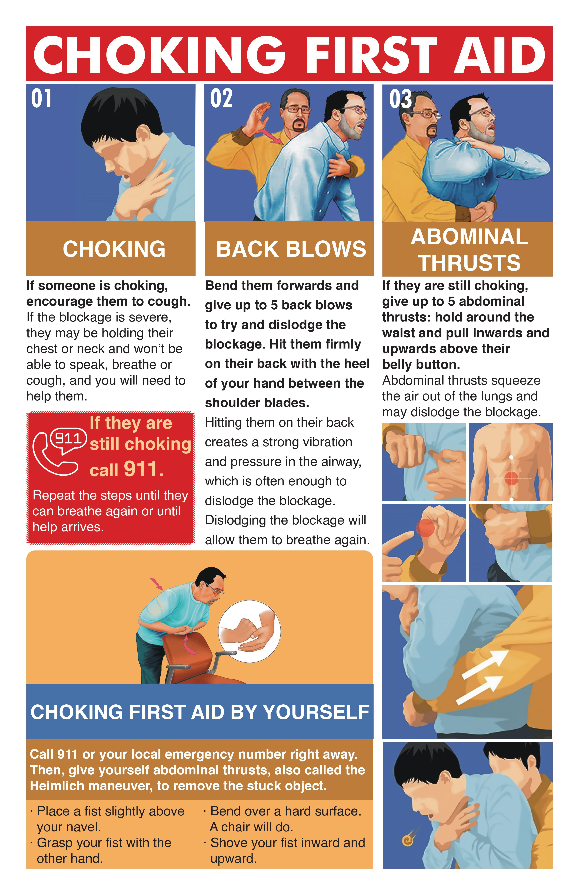
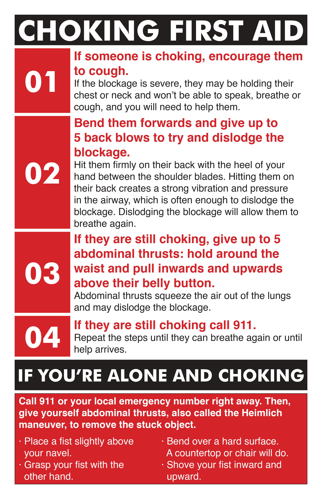
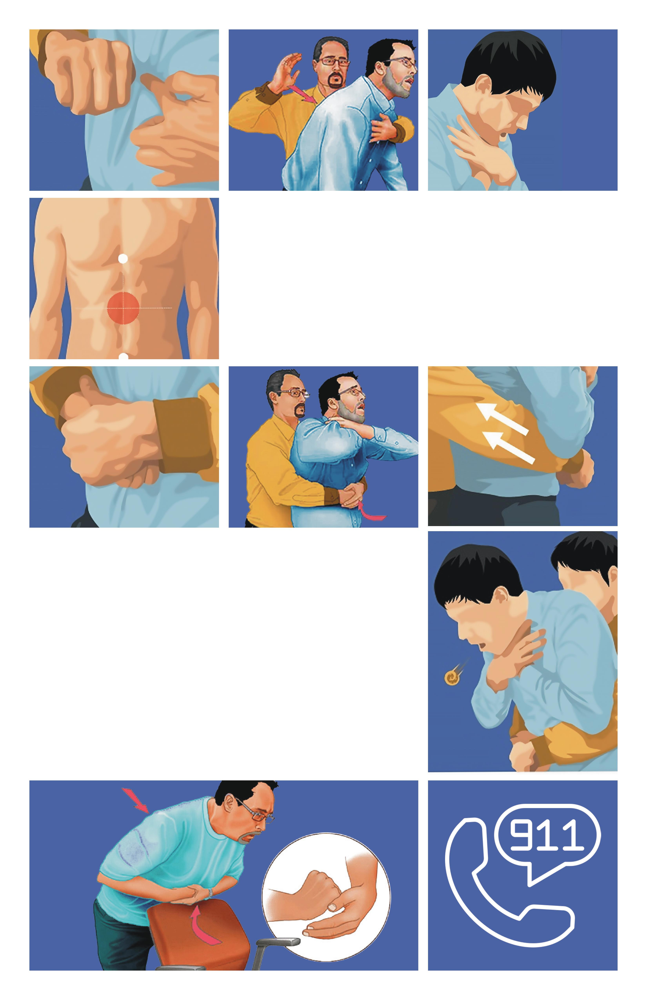

- About
- CHOKING FIRST AID POSTERS
- Date: 2023 (Spring)
- Class: ART29510_Graphic Design Concepts
- Software: Adobe Photoshop & Adobe InDesign
- THIS PROJECT HAS 3 PARTS.
- ★ One is picture and text.
- ★ Secend is text only.
- ★ The last one is picture only.

- Picture and text choking first aid poster.
- ★ Color of clothes of two cartoon characters.
- ★ At the heart of this poster are two cartoon characters, each clad in distinctive clothing hues carefully selected to enhance visibility and comprehension. The victim, portrayed in warm, inviting colors, elicits empathy and recognition, while the rescuer, dressed in contrasting, attention-grabbing attire, embodies the proactive stance necessary for effective intervention. This deliberate color choice not only serves to capture the viewer's attention but also facilitates quick identification of key roles and actions within the emergency scenario.
- ★ Cartoon posters, renowned for their ability to captivate audiences, leverage bright colors and engaging graphics to convey complex concepts with remarkable clarity. In the case of the "Choking First Aid Poster," this visual language transcends age barriers, ensuring accessibility for both children and the elderly. Through simple yet expressive imagery and language, the poster communicates essential steps for choking first aid in a manner that is universally understandable and actionable.
- ★ Moreover, the integration of concise textual instructions alongside the cartoon imagery enhances comprehension and reinforces key concepts. By providing supplementary information in a clear and accessible format, the poster equips viewers with the knowledge and confidence to respond effectively in emergency situations. This fusion of visual and textual elements transforms the poster into a valuable educational resource, bridging the gap between passive awareness and active engagement in lifesaving practices.

- Text only choking first aid poster.
- ★ The strategic use of red color to highlight important sentences enhances readability and ensures that key instructions stand out amidst the poster's content. This deliberate choice not only captures the viewer's attention but also facilitates quick comprehension of critical information, enabling swift and decisive action in emergency scenarios. By prioritizing clarity and visibility, text-based posters minimize the risk of misinterpretation and ensure that crucial details remain front and center, even in moments of heightened tension and urgency.
- ★ One of the greatest strengths of text-based choking first aid posters lies in their versatility. Unlike posters reliant on graphics or illustrations, which may be limited in their adaptability, text-based posters can be easily modified to address a wide range of emergency situations. Whether responding to medical emergencies, natural disasters, or public health crises, the information presented on these posters can be tailored to suit specific needs and circumstances, ensuring relevance and effectiveness across diverse scenarios.
- ★ Moreover, text-based posters offer a cost-effective solution for emergency preparedness initiatives. The creation and production of text-based materials typically require fewer resources compared to posters featuring intricate graphics or illustrations. By prioritizing textual content over visual elements, organizations can produce posters quickly and at a lower cost, maximizing their impact and reach within constrained budgets.
- ★ In addition to their cost-effectiveness, text-based posters offer a unique advantage in terms of consistency and accuracy. Unlike visuals, which may be subject to interpretation or misrepresentation, text-based information is inherently precise and unambiguous. This ensures that the provided instructions remain consistent and accurate, minimizing the risk of confusion or error during emergency response efforts. By prioritizing clarity and reliability, text-based posters serve as trusted resources that empower individuals to take effective action when faced with choking emergencies and other critical situations.

- Picture only choking first aid poster.
- ★ The "Choking First Aid Poster" presents a visually engaging depiction of the five essential steps to aid an individual experiencing choking. Utilizing a creative arrangement of graphics shaped like the number 5, the poster succinctly communicates the sequential actions bystanders can take to provide immediate assistance in a choking emergency.
- ★ In the upper section of the poster, the number 5 is prominently displayed from right to left, symbolizing the involvement of bystanders in the first aid process. Each segment of the number represents a distinct action that bystanders can perform to support the choking individual. From recognizing the signs of choking to offering assistance and monitoring the situation, the graphic serves as a visual roadmap for bystander intervention, emphasizing the importance of swift and decisive action in saving lives.
- ★ The bottom part of the number 5 delineates the five steps for providing immediate aid to a choking individual. Each step is illustrated with clear and concise graphics, making the procedure easily understandable and actionable even in high-stress situations. From performing abdominal thrusts to clearing the airway, the visual guide ensures that viewers can quickly grasp the necessary steps for effective choking first aid.
- ★ Both sections of the poster culminate with the crucial step of dialing 911, highlighting the importance of seeking professional medical assistance in severe choking cases. By emphasizing the role of emergency services, the poster reinforces the message that bystanders play a vital role in initiating first aid measures while professional help is summoned.